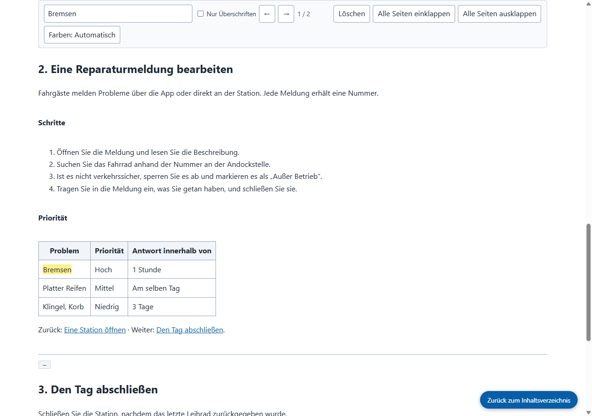

Echte Ausgabe von Grab All Files
Vier Handbuchseiten in einer HTML-Datei zusammengefasst (Pro)
Ausgehend vom Inhaltsverzeichnis eines fiktiven Handbuchs wurden die drei verlinkten Kapitel aufgerufen und die vier Seiten in einer HTML-Datei zusammengefasst. Das Inhaltsverzeichnis oben springt zu jedem Kapitel, und das Suchfeld durchsucht das gesamte Dokument. Links zwischen den Kapiteln führen zur passenden Seite innerhalb der gespeicherten Datei. Die Abbildung liegt als Bild in der Datei.
Ausgabedateien
Das gespeicherte HTML, geöffnet und nach „Bremsen“ durchsucht (Screenshot von der Website)

So ist sie entstanden
- Quellseite
- /samples/source/de/bike-share-handbook/
- Erweiterung
- Grab All Files 5.8.20
- Browser
- Chrome 155.0.8059.85 (Windows 11)
- Tarif
- Pro
- Erstellt am
- 2026-10-21
- Einstellungen
- Seiten: Den Links auf dieser Seite folgen (4 Seiten)
- Darstellung: Gut lesbar
- Ausgabe: Mit Inhaltsverzeichnis und Suche (Standard)
- KI-Daten: Nicht erzeugen (Standard)